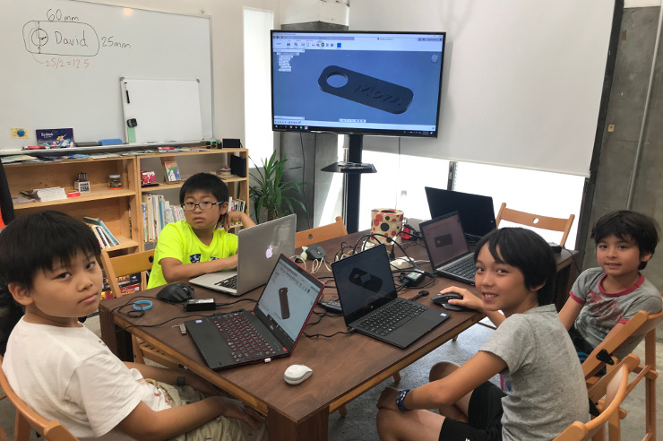
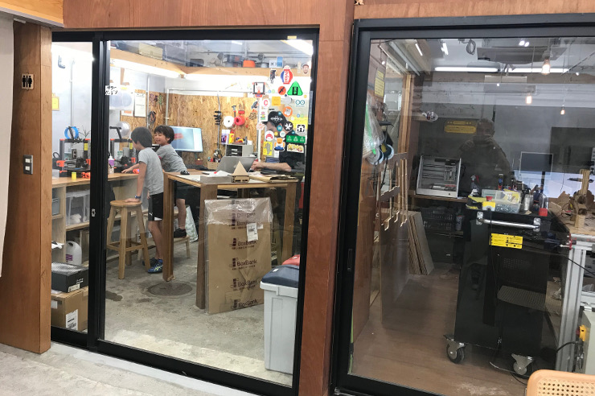

熟練のプログラマーによる授業


なぜプログラミングを学ぶべきなのか
プログラミングは将来身に着けるべき必須のスキルです

近年、プログラミングは新しいリテラシーになりつつあります。各国でもプログラミングに対する認識が高まり、教育の一環として用いる動きが増えています。日本は遅れながらも2020年から、プログラミング教育が小学校から必修化されました。
そして、中学校で 始めていた英語教育が小学3年生より正式にスタートします。 中学校では、小学校での英語授業が前提となり、
英語で 英語の勉強で行われるようになります。
もっと知る >
論理的かつ批判的な思考も身につく

プログラミングは数的処理など、少々理系なイメージがあると思います。しかし、それだけではないのです。プログラミングをすることで、論理的かつ批判的思考力を身に着けることができます。
また、多種多様なコードを習得するため、多面的な思考力、自律的学習能力はもちろんのこと、私たちの授業はすべて英語で行うため、異文化理解、英語でのコミュニケーション能力などいった将来必要となる資質を身に着けることができます。
。、
もっと知る >
全ての仕事の40%がなくなる？

人工知能と自動化技術の発展は、近年多くの仕事の機会を奪おうとしています。人が必要ではなくなり、すべてをこれらの最新技術で補える時代が来ています。
製造業におけるロボット運用は有名ですが、近年、それ以外の業界でもAI化や自動化がすすめられているのが現状です。 現在の子供たちが就職をする頃には、ほとんどの仕事がAIによって行われていても不自然ではないほど、技術は発展し続けています。AIと共存するためには、共存できるような何かしらの知識やスキルを習得する必要があります。だからこそプログラミングを学ぶべきなのです。
もっと知る >
カリキュラム
ｼﾞｭﾆｱﾌﾟﾛｸﾞﾗﾐﾝｸﾞ教室
週に1回：月額28,000円
週に２回：月額42,000円
ウェブアプリビルダー
授業時間：1回2時間
週に1回：月額24,000円
週に２回：月額36,000円
ﾃﾞｰﾀエクスプローラー
授業時間：1回2時間
週に1回：月額24,000円
週に２回：月額36,000円
授業スケジュール
- 午後3時から午後5時まで
- 午後4時から午後6時まで
- 午後5時から午後7時まで
- 午前10時半から午後12時半まで
- 午後1時半から午後3時半まで
- 午後3時半から午後5時半まで
- 午後4時半から午後6時半まで
講師紹介

エイバリー先生
私は言語を学ぶことが大好きです！私はシドニー大学で言語学と日本語を専攻していました。
私は2年以上前からスタンドアップコメディーを書き、2019年のメルボルン・フリンジ・フェスティバルで1時間のソロショーでスタンドアップコメディアンとしてデビューした他、メルボルンの全体で演劇作品の共同脚本、演出、サウンドデザインなどの経験があります。
また、物語、詩、作詞や作曲を趣味楽しんでいます。
私は、子供たちがどんな形であれ、自分自身を表現するためサポートし、成長を促すことに情熱を注いでいます。京都レッスンの一員に慣れたことを大変光栄に思い、また授業をすることを楽しみにしています。

アレックス先生
プログラミングができることは、私の人生の中で習得したスキルの中で最も大切なスキルの一つだと思います。数年前、デスクワークでの反復作業を自動化する目的で、独学でPythonを学びました。
2019年に京都に引っ越して、大人のWeb開発ブートキャンプに参加しました。それが京都レッスンとの出会いでした! その後、私は先生としてで生徒にプログラミングを教え始めましたが、この教室が信じられないほど楽しかったです。
これまでのキャリアでは、シリコンバレーのテクノロジー会社で働いたり、LAで映画の小道具を作ったりしてきました。 現在は京都のスタートアップ企業を設立し、企業のウェブプロジェクトに携わりながら、その企業のCEOに英語指導をしています。私は様々なグループの人々と一緒に仕事をし、成功するために必要なツールを提供することがやりがいです。
京都レッスンでは、新しいことに挑戦したいという気持ちを皆さんにシェアしていきたいと思っています。
アシュリー先生
私は教えることが好きです。高校時代には家庭教師として働いた経験があります。現在は英会話学校の講師として、大学入学時から約4年間働いています。
教えること以外にも、芸術や文学、人とかかわることも大好きです。
私は13歳までサウスカロライナ州で育ち、13歳のころに日本に住み始めました。その後、同志社大学に進学し、京都に移りました。大学では、リベラルアーツを専攻しています。
今の日本の英語教育は、教科書から勉強して高得点を取ることを重視しすぎていると感じています。日本で英語を学ぼうとしている子供たちに、言語の楽しさを伝えたいと思っています。今までとは全く違う環境で、勉強と遊びを両立させながら働けることにワクワクしています。

ルイ先生
僕は現在京都国際フランス学園で勉強しています。コンピュータサイエンスが私の専攻の一つです。
僕はフランスと日本のハーフのため、両方の言語が喋れます。ヨーロッパで育ち、10年ほど前に京都に引っ越してきました。
僕はサッカーと速い乗り物が好きなのですが、ついこの前自動車を運転できる年齢に達しバイクが欲しくなりました。でも、バイクはかなり高価なものだということに気付き、効率良く、そして大事な知識を身に付けながらお金を稼ぐ方法を模索した結果投資とプログラミングに出会いました。それ以来、私は両方の分野についてもっと学びたいと思っていますし、他の人とこの知識を共有したいと思っています。これらが私を先生として学生に教えることになった要因でもあります。たくさんの学生にプログラミングの楽しさを教えることを楽しみにしています。

クリス先生
私は、就学全教育、とTESOLの修士号を取得しました。そして、2012年に日本に旅行した後、将来自分が何をしたいかを見つけました。
私は子供にはたくさんの可能性があり、何でも成し遂げることができると思います。
教育者の役割は、遊び、物語、音楽、様々なアクティビティ通して、子どもたちの可能性を引き出し、楽しく学ぶことができるようにサポートすることだと考えています。
私は新しいことを探求したり、学んだりするのが大好きです。(暇さえあればJ.R.R.トールキンの研究をしています）また、格闘技、映画、音楽も嗜んでいます。
私は次なる時代にグローバル人材になりうる生徒たちに自信を持たせ、また成長を促すために、自分の指導法を常に模索し、研鑽に取り組んでいます。

とら先生
私は語学を学ぶことも教えることも大好きです。一歳から英語に触れているため、英語はネイティブレベルに話せますが、大学に進学してからは、フランス語や韓国語も勉強しています。
埼玉県の川越市で生まれましたが、京都に引っ越すまでは海外で育ちました。香港、インド、ドバイで過ごした後、京都の立命館宇治高校に進学しました。また、高校一年次には交換留学生としてヒューストンに1年間留学し、高校卒業前にはカナダのブリティッシュコロンビア大学にも留学しました。現在は立命館大学で国際関係学を専攻しています。
英語を勉強する上で一番大切なのはスピーキングです。英語を話すことで、様々な国の人たちと交流ができ、異文化理解や言語運用能力の成長にもつながるからです。海外での経験を共有しながら、皆様と楽しい授業ができることを楽しみにしています。

デイビット先生
私は30年以上アメリカと日本の両方で学童保育の先生、キャンプカウンセラー、幼稚園の先生など、子供たちの育成に関わる仕事をしてきました。
また、コンピュータサイエンスなどの科学的なフィールドでの仕事の経験もあります。
私は10歳からプログラミングをはじめ、現在はcobol, html, javascriptなどのプログラミング言語を習得済みです。また、日本の学会のスタッフとしても働いております。
私はヨーロッパで生まれましたが、7歳で渡米し、フランス語、ポルトガル語、アメリカ手話、また、簡単な日本語を話します。現在は京都で妻と娘と暮らしています。

アラン先生
私は、プログラミングはすべての子供たちが一日でも早く身につけるべき必須のスキルだと考えています。
妻と4人の子供たちと一緒に京都に引っ越してきたとき、まず私の子供たちに通わせるための適切なプログランミングスクールを探しました。しかしながら、どこの学校も満足するほど質が良くありませんでした。。
そこで、私は自分の手でコーディングスクールを始めることにしました。こうしてこの京都レッスンは誕生しました。
私はフランス出身で、アメリカの大学院に通っていました。京都に移住する前は、東京、香港、シンガポールで15年以上トレーダーとして働いていました。銀行に勤務していた時に、反復作業を自動化するために独学でプログラミングを学びました。それ以来、プログラミングをしない日がないほど、毎日プログラミングに励んでいます。
皆様の声
「短期講座を受ける前は、コンピュータサイエンスは数学や科学を得意とする学生のためのものと考えていました。
私は文系ですが、集中講座を受けてみてプログラミングに大変興味を持つようになりました。
講座でプログラミングを学べた事は、長期的に見ても非常にやりがいのある、そして最も価値のある経験となりました。
アラン先生のわかりやすい指導には感謝しかありません！」

"プログラミングが楽しく学べると思いついたのは一体誰だろう! アランとの授業は間違いなくそうです! プログラミングをすることで、人気のあるゲームを改良したり、ウェブサイトを作ったり、実用的な課題に取り組むことができます。私の二人の子供達はアランのプログラミング教室をとても楽しんでいます！"
”私の子供は京都レッスンが大好きです。アランさんはとても優しく、真面目な人です。彼は生徒達に自分から考えるように指導しています。正直私はプログラミングには詳しくないので、子供たちが具体的に何をしているかははっきりわかりませんが、一つ確かなことが言えるとしたら、ここで学んでいる知識は必ず彼らの人生で大事な財産になるということです。”


「小学4年生の息子が2回Coding Boot Campに参加しました。このお教室では、他のプログラミング教室と違って、インターネットでの
メールなどの情報の暗号化、数字を並び替えるアルゴリズムの方法など、コンピュータ科学に関する基礎的な理論を、分かりやすく
子供達に理解させようという姿勢が感じられます。単に、scratchゲームを作らせることに没頭させる場所ではありません。英語に関しては、
インターナショナルスクールの子供たちや帰国子女の方が若干多い印象ですが、アラン先生は、とても分かりやすく話して頂けるということに加え、
参加者のほぼ全員が日本人なので、必ずしも英語が上手なお子さんでなくとも参加は可能だと思います。Coding Boot Campの最終日に、
親向けの発表会があり、子供達全員が平等に英語で勉強した内容について、身振り手振りでプレゼンテーションを行います。Camp中は、
先生からメールで講義について手厚い報告を頂いたり、親も興味が持てるように工夫されていると思います。 」
子供達が家でNintendo Switchで遊ぶ時間を、未来の為に有意義な学びの時間に変えることが
できたらと思ったのがきっかけでこのレッスンに参加しました。
最初はScratch簡単なブロックを組み立てるようなイメージで学びます。そしてマインクラフトを
使ってゲームをするように遊びながらプログラミング構築を学び始めます、ゲーム内で
「あれをしてみたい」「こういうことはできるか？」と、子供達は楽しみながら論理的思考で
自然に簡単なコードを書き始めました。
今はウェブサイトを作り始めていますが、自分の考えが形になってできていくのがとても
楽しいようです。
レッスンはアラン先生が生徒一人一人に目を向けて皆でディスカッションしながら進められます。
英語とフランス語が飛び交い、アラン先生の豊かな経験と知識の下で、国際的で最先端の
情報を得られるレッスンは他にはなく非常に貴重だと思います。
子供達はIT化された時代に柔軟に対応していく為にも、このような論理的思考を
育て創造していく力は今後の社会や自分自身の助けになると思います。

私の8歳の息子は京都レッスンに通い始めて何ヶ月か経ちました。今では簡単なゲームをScratchで作れるようなになったり、マインクラフトでアートエフェクトをつけたりできるようになったり、自分のサイトを作れるようになりました。
この教室で行っているプロジェクトのおかげで彼の将来はどんどん輝かしいものになっており、それと同時にクリエイティビティも養われています。
<
興味旺盛な子にはとてもおすすめします！
PC、インターネットの技術、とくにコーディングは様々なwebサービスのプラット
フォームにもなる為、小学生が通える良いスクールを探していました。
「Kyoto Lesson」を立ち上げ、講師でもあるアランは、ビジネスの最前線でコーディングスキル
を使って仕事をしている非常に優秀な講師です。
コーディングのロジックを教え、答えを教えるのでなく過程を考えさせる探求型のレッスンに
大変満足しております。
集中講座プログラム
イマージョンプログラム
集中講座プログラムは
長期休暇期間に行われます。
. このプログラムは、1日3時間の集中クラスで、5日間にわたって行われます。学生はチームでプロジェクトに取り組み、このプログラムが終了までに完成させることを目指します。
これらの集中講座の目標は、企業や非営利団体が直面している現実世界の問題や、学生の興味に関連した問題の解決策を見つけることです。
学生は、JavaScriptとPython、ソフトウェア開発者によって広く使用されているこの2つのプログラミング言語を始める前に、
マサチューセッツ工科大学（MIT）によって開発された視覚的なプログラミング言語であるScratchから始めます。
- Level 0: スクラッチで自分のゲームを作る
- Level 1: スクラッチを熟知する
- Level 2: マインクラフトを工作する
- Level 3: 自分のウェブサイトを作る
- Level 4: 自分のアプリを作る
- Level 5: JavaScriptでダイナミックウェブサイトを作る
- Level 6: JavaScriptを熟知する
- Level 7: PyGameでゲームを作る
- Level 8: Pythonを熟知する


休日の英語教室🇬🇧
英語の集中講座
英語集中キャンプは、7月と8月の夏休み期間中に行われます。
1日3時間の集中授業を5日間にわたって行います。
月曜日から金曜日の午前9時30分から12時30分まで。
スピーキングとリスニングの理解に重点を置き、最終的には
他の人と交流する際の生徒の流暢さを向上させます。
当校の教師は全員ネイティブスピーカーです。
生徒は英語のレベルに応じてグループに分かれます。
1クラス最大9名まで（1人の先生につき）。
サマーキャンプは1週間のプロジェクトを中心に構成されています。
- ファンタジー新聞
- 映画クリエイター
- 漫画マニア
- などなど...
その他にも、以下のような娯楽の時間が設けられています。
- ゲーム,
- パズル,
- 語学ワークショップ,
- 音楽,
- 読書時間, などなど...
プログラム費用：20,000円/週（15時間授業)
＋登録料3,000円（新入生のみ）、1:1の遠隔英語アシストが含まれます。
場所: N5.5コミュニティラボ (Google マップは こちら)
〒600-8188 京都府京都市下京区和泉町529
ファンタジー新聞
ファンタジー新聞では、子供たちが自分たちで新聞を作ります。チームプロジェクトを通して、編集者、記者、コピー編集者、カメラマン、アーティスト、出版社などのいろいろな役割を担っていきます。同時に、子どもたちは時事、演劇、科学などの学術的な役割も担当します。
さまざまな役割を試すことで、子どもたちはさまざまな仕事の中で言語能力や表現力を発達させることを目指します。
- 編集者として、子どもたちが内容を話し合ったり、一緒に判断したりすることで、チームワークやリーダーシップが促進されます。
- 記者として、子供たちは興味のある分野でコンテンツを作成します。
- コピー編集者として、具体的な言語能力を使いこなし、発展させていきます。
- アーティストとして、想像力を養い、人と人とを繋ぐ力を養います。

ハードウェアプロトタイピング
三つの補完的な流れ
コンピューターサイエンスにおいて、ハードウェアの知識は必須の要素です。プログラミングスキルの向上に伴い、より効率的なコードを書くためには、
自分たちがさらされている様々なハードウェアの制限が何であるかを理解する必要があります。
なぜ私たちがこのハードウェアプロトタイポイングをカリキュラムに組み込んだのか、それはいIoTが世界中で重要な研究分野になりつつある現在において、子供たちがハードウェアプロトタイピングを習得することが一番重要だと考えているからです。
このカリキュラムでは、子供たちに実際の３D プリンターや電子基板を体験してもらいます。実際に設計をし、それらの機械を使って子どもたちが作った設計を実体化させます。
- 3Dプリント&モデリング
- 電子学 (Micro:Bit Block Editor, Arduino, Raspberry Pi...)
- ロボット学 (カミボット, レゴマインドストーム, ドローン...)

このプログラムはKyoto Makers Garage (KMG)
スタジオで行われます。(KRPから500m。Google マップ
はこちら)
ここでは、子供たちは一般的な工作機械から最先端の機械を使って授業に取り組むことができます。。
- 3Dプリンター ステレオリソグラフィ（Formlab）と溶融堆積モデリング
- CNC (木、複合材、アルミ、スチール、プラスチックなどの各種硬質材料の切断に使用されるコンピュータ制御の切断機)。
- レーザーカッター装置
場所:
〒600-8846
京都府京都市下京区朱雀宝蔵町73-1
もっと知る >

集中講座の実施
こちらの集中講座では3Dプリンティングの入門クラスです。
3Dプリンティングは未来における重要な技術の一つであり、企業がコスト削減、市場投入までの時間短縮、より強くて軽い部品の生産、効率性の向上、その他の無数の課題の解決を可能にします。
そのため、私たちは21世紀のグローバル経済において重要な要素を担うこのテクノロジーを理解することは、学生にとって重要なことだと考えています。
もっと知る >





テクノロジーアントレプレナー
最先端のカリキュラム
このカリキュラムでは、技術知識を持たない生徒がアントレプレナーのように自らの手で、自分の製品を1から設計し、実体化することができるレベルまで到達させることを目的としています。私たちのカリキュラムは、技術的な知識を持たない学生が自分の製品を作ることができるレベルまで到達することを目的としています。 その過程において、課題解決のためのアプローチ法やアイデア評価、仮説検証、リスク軽減などといったスキルを学びながら、製品を作り上げ、これらのプロセスを反復作業として取り組めるようにします。アイデアの可能性を迅速に評価し、仮説をテストし、リスクを最小限に抑え、MVPを設計・構築し、そこから反復するための技術を学びます。 このカリキュラムでは最先端のツールを使用しながら行われます。
- ウェブサイトの作成法学ぶ
- バックエンドアプリケーションをJavaScriptで作成する
- Reactでフロントエンドアプリを作る
- Pythonを用いたデータ分析する
- SQLを用いたデータ分析する
- 機械学習を始める
このテクノロジーアントレプレナーショップでは主に実用的なプログラミングスキルやリーダーシップスキルを学びます。 プログラム中子供たちは様々な人たち（エンジニア、デザイナー、プロダクトマネージャー、プロジェクトマネージャー）と交流しながら作業を進めて言います。 プログラムの終盤あたりには、各チームがプロダクトマネージャーの前で進捗状況を発表します。そして最後には、各チームはプロジェクトの発表する機会があります。
スケジュールも問題なし！
このカリキュラムでは、受講する多くの生徒が大学生のため
大学の授業両立できるように、可能な限り柔軟なスケジューリングのもと行っていきます。
各セッションでは、自宅で、個人またはグループでショートプロジェクトに取り組んでもらいます。
カリキュラム全体を通して、Webアプリケーションの構築(JavaScript)とデータツール(Python)を理解し、実践的な運用スキルを習得します。。
それぞれのスキルをさらに3つのサブスキルに分け、自分のペースで習得できるようにしています。サブスキルを短期間で習得するのがベストですが、他の勉強を並行して行う場合は、スケジューリングの面で少々難しい部分もあると思います。ですがご安心ください、短期型と長期型の二つのプロフラムをご用意していますので、忙しい人でも安心して受講できます。。
- 集中講座プログラム(1日:3時間+3時間、 週5日、を12週間, ¥600,000)
- 継続型学習プログラム(1日:4時間+4時間、週2日、を24週間, ¥675,000)
新規クラスは6名以上の登録があれば開講されます。ご不明な点がございましたら、遠慮なく 私たち に、ご連絡ください.
私たちについて
Build 1st, Theory 2nd
何か大きなことを成し遂げることは決して一人ではできません。誰かの導きがあっての成功です。
私たちのイマージョン型のスタートアップクラスのデザインでは、まさにそれを体現しています。一般的多学校の授業のような先にやり方や理論を万で問題に取り組むのとは違い、先に課題に立ち向かい、そこから理論や方法を学び、授業で扱う架空の問題解決をしていきます。子供たちが実際に就職し、仕事をするとき、自らの手で課題解決に取り組まなければなりません。そのために必要なプロジェクト管理、リサーチ、チームワークスキルなどは、仕事を始めてからではなく、若いうちから養わなければならないと私たちは考えます。自分から行動し、0から1にし、そこからさらに発展させていける力を得ることが、今現代を生きる子供たちや若者には必要とされているのではないのでしょうか。
もっと知る >
テクノロジーシーン
Kyoto Lessonの創立者は、テック業界で大きなネットワークを築いてきました。
この分野の第一線で活躍する人たちとのネットワークがあるからこそ、Kyoto Lessonは最先端の教育を生徒さんに提供することができるのです。
私たちが使用しているすべてのツールや機器などは常に最新のものを使用しています。
さらに、Kyoto Lessonでは、生徒の皆さんには実際の技術者たちと直接触れ合う楽しい機会もご用意しております。。
上級クラスでは、大手テック企業（Google, Apple, Facebook, Amazon, Uber, Airbnb...）や小規模なスタートアップ企業（国内外）、非営利団体との共同プロジェクトにも取り組みます。
もっと知る >
Google Project >
創業者について
フランス出身のアランは、工学、統計学、経営学の三つの修士号を取得ている他、金融の博士号も取得しています。
Alanは日本、香港、シンガポールで15年間、一流の投資銀行でオプショントレーダーとして働いてきました。
Pythonなどのプログラミングを独学で勉強し、フロントオフィスの自動化を担当していました。彼は医療とITを掛け合わせた会社や、ビットコインなどのFintechを扱う企業も設立しました。
もっと知る >